PhD Candidate, Computer Science & Engineering, University of Washington
I am a final-year PhD student at the Paul G. Allen School of Computer Science & Engineering at the University of Washington, advised by Prof. Ranjay Krishna and Prof. Linda Shapiro. I am also a student researcher at the PRIOR team at AI2. Previously, I received my B.Sc. from Obafemi Awolowo University, where I worked with Prof. Kayode P. Ayodele.
My research advances multimodal representation and generative modeling through effective alignment strategies, spanning large-scale data curation, benchmarking, multi-agent reasoning, and physics-informed generative models for improved temporal consistency and physical plausibility.
Invited talk at Cohere For AI on curating large-scale medical vision-language datasets from educational videos and training multimodal models for histopathology.
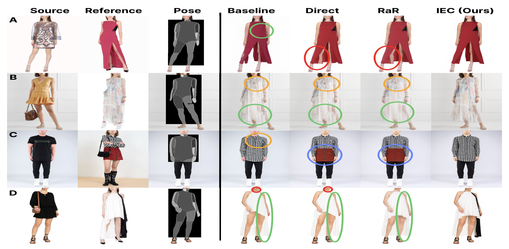
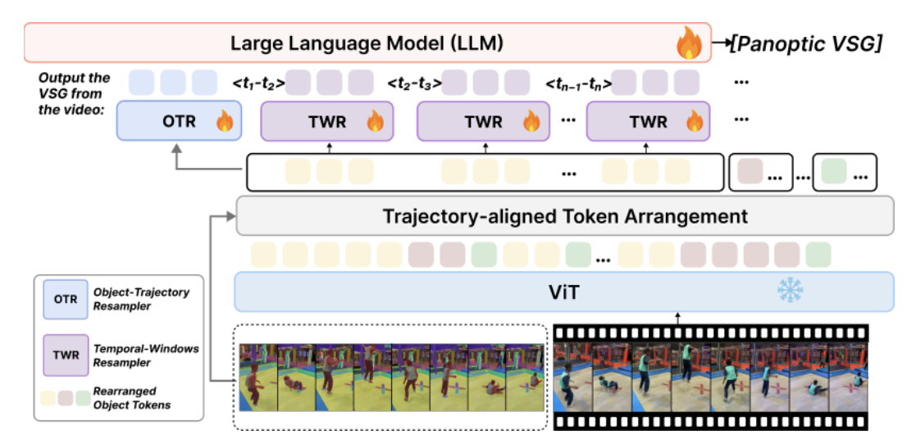
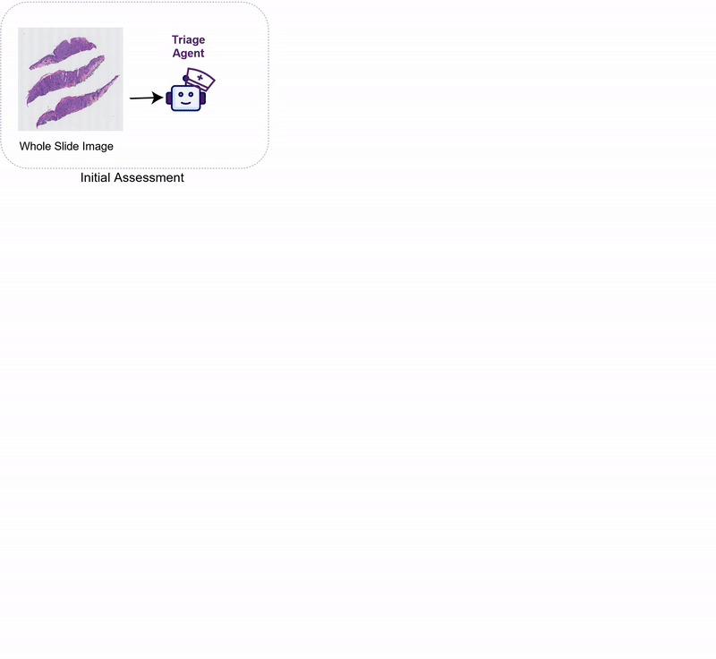
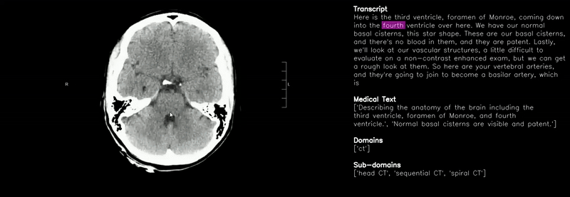
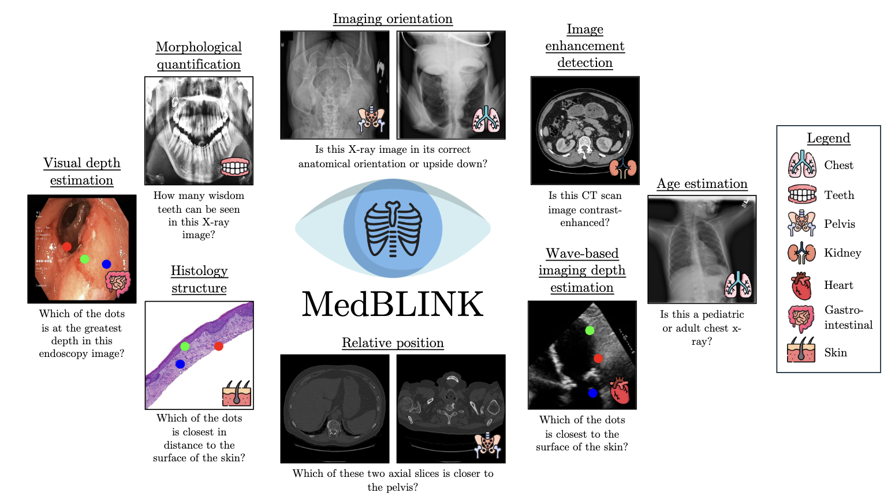
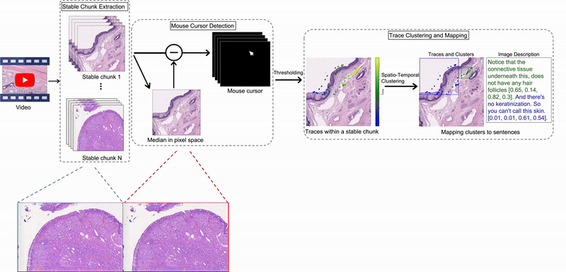
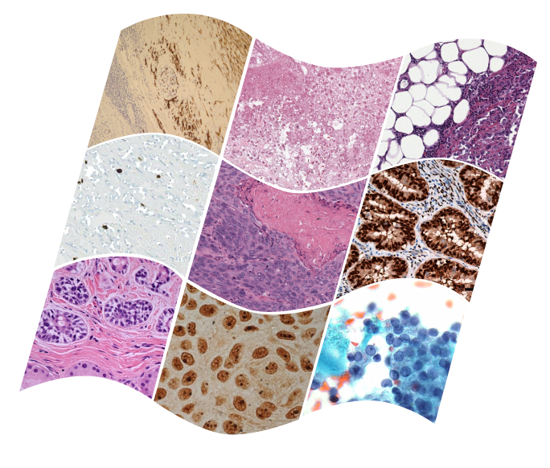
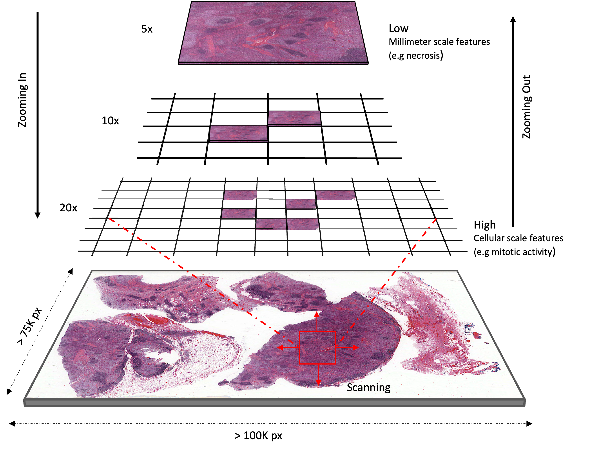
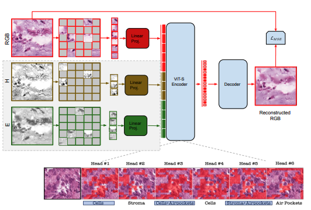
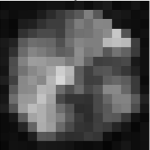
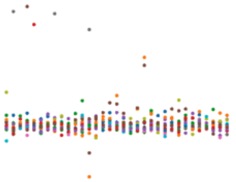